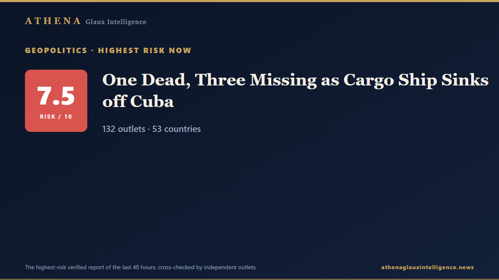
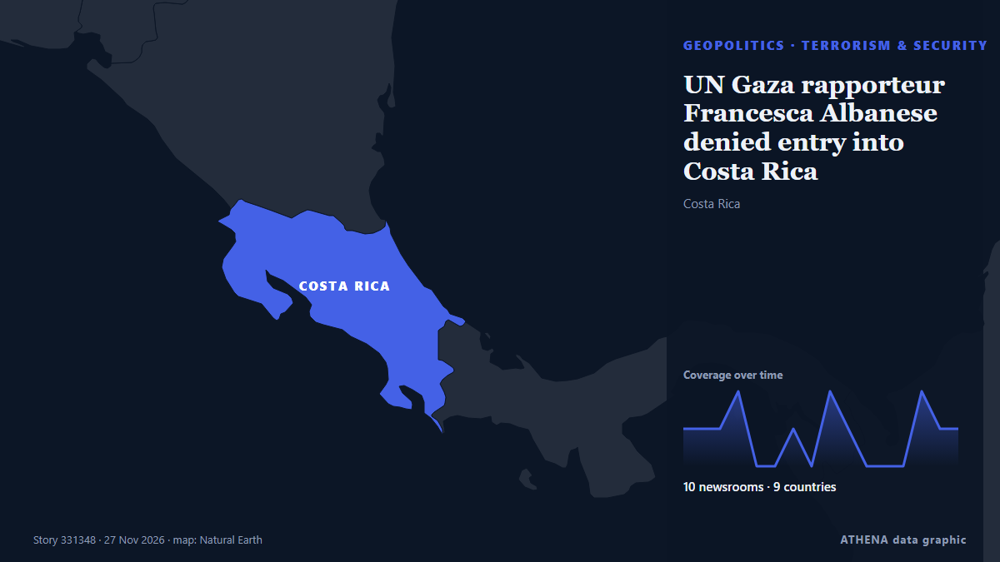

Risque 7.5Élevé
Géopolitique, économie et transport maritime — recoupés entre pays.
Géopolitique
Toute la géopolitique >Risque le plus élevé maintenant

Risque en hausseHausse au cours des dernières 24 heures
Maritime et transport
Bureau maritime >Risque le plus élevé maintenant
Risque 7.4Élevé
Saudi-led coalition destroys 50 Iran-Backed Houthi military targets in Yemen
Voir les preuves ›
Liste de surveillanceDétroits, ports et autres reportages maritimes
- Strait of HormuzPerturbéattack / strike · risk 7.5 · 135 newsrooms (72 h)
- Kerch Strait / Black SeaPerturbéattack / strike · risk 7.5 · 135 newsrooms (72 h)
- SingaporePerturbéattack / strike · risk 7.0 · 141 newsrooms (72 h)
Chaque titre, vérifié dans plusieurs pays.
ATHENA Glaux suit 742 médias dans le monde. Une information devient un événement vérifié seulement lorsque des médias indépendants la rapportent. Chaque événement indique qui l'a publiée en premier et un score de risque avec ses raisons.
1 459événements en 24 h
742médias suivis
43minutes entre deux mises à jour
Séisme ou inondation près de chez vous cette semaine ?
Saisissez votre ville et voyez les séismes, inondations, tempêtes et alertes officielles à proximité, avec une liste du kit d'urgence 72 heures. Gratuit, sans inscription, et votre lieu reste sur votre appareil.
Des articles arrivent de médias indépendants : quand deux se rejoignent sur la même histoire, un événement vérifié naît.
Comment ATHENA vérifie une information
- CollecterLes reportages arrivent de médias indépendants dans de nombreux pays.
- CroiserQuand deux médias se rejoignent sur la même information, elle devient un événement vérifié.
- ExpliquerChaque événement montre qui était le premier, jusqu'où il s'est propagé et pourquoi le risque est ce qu'il est.
Perspectives mondiales des risques
Bilans hebdomadaires et mensuels : les événements les plus à risque, les tendances par domaine et par région, et ce qu'il faut surveiller.
Lire les perspectives ›Briefing quotidien
Les dix événements mondiaux les plus importants du jour, les risques en hausse et les nouveaux événements, chaque chiffre expliqué.
Ouvrir le briefing du jour ›
GéopolitiqueUN Gaza rapporteur Francesca Albanese denied entry into Costa Rica
Costa Rica has barred UN special rapporteur Francesca Albanese, citing unfounded ‘links to terrorist acts’. de Al Jazeera English
5.8Importance
4.5Risque · accru
88%Confiance
Les titres sont affichés en anglais, tels que publiés.
Commerce et industrie
Thanksgiving storm knocks out power, disrupts flights on US East Coast
More than 836,000 US utility customers had no power. de The Straits Times
Énergie et environnement
Trump backs Iraqi leader’s efforts to assert more state authority
Nov 27 (Reuters) - US President Donald Trump on Friday backed the Iraqi leader's drive to assert state control, including stopping the smuggling of Iraqi oil, moves that put Baghdad in direct… de Al-Monitor
Sponsorisé
Cybernetics and Artificial Intelligence Lab Welcome to the Cybernetics and Artificial Intelligence Laboratory, established at the Department of Business Administration of the National and Kapodistrian University of Athens. The lab is headed by Professor Dimitrios Thomakos. The lab aims to do research that can be published in top venues. Our research uses tools and methods of Artificial Intelligence, and lies in the following areas: - Forecasting - Decision making - Cyber security - Finance We are always looking forward to collaborating with exceptional students!
En savoir plus – Cybernetics and Artificial Intelligence LabNavires dans les détroits du monde en ce moment
Comptages AIS en direct. Touchez ou survolez une barre pour le détail.
Derniers reportages
Under-attack Palestinians find unlikely ally in Israeli retired general
Global fashion brands shift orders from Bangladesh to India amid unrest
Conflicts, El Nino Worsening Hunger — UN
German parliament approves record $610B budget for 2027
Russian hybrid attacks could cause ‘mass casualty event’ in Europe, report warns
Delimitation: DMK says ‘no compromise’, reiterates demand to protect Tamil Nadu’s share of seats
Hackers Breach US Air Force’s Flagship Cloud One Platform
US pushed Venezuela, Iraq to consider leaving OPEC, sources say
Économie et marchés
Trump demands probe into ‘fake’ US GDP figures
President Donald Trump called Thursday for an investigation into a routine revision of economic growth figures as he pushed his groundless claims of interference in the US midterm elections. de Vanguard
Géopolitique
Iran denies involvement after 2 Italian technicians killed in attack on Kuwait site
Two Italians were killed in a drone attack in Kuwait on Thursday that Italy and Kuwait blamed on Iran, although Tehran has denied any involvement. de CBC News (alternative feed)
Géopolitique
Ukraine says Benghazi drone attack not directed against Libya
Ukrainian Foreign Minister Andrii Sybiha said on Thursday that Kyiv's targeting of Russian ships in Benghazi was not directed at Libya itself. de The New Arab
Géopolitique, politique et sécurité
Plus ›Guerres et conflits
Israel kills four in Gaza as Hamas chief al-Hayya’s son survives strike
Four of Khalil al-Hayya's other sons were previously killed by Israeli forces, according to the Palestinian group. de Al Jazeera English
- Élections et politique
New Zealand's ruling coalition loses majority in final election count
- Élections et politique
With US midterms underway, courts rebuff Trump's pressure on state election officials
- Élections et politique
Sanchez makes last bid to beat the right ahead of Spanish vote
- Guerres et conflits
Turkey, Saudi Arabia and Pakistan to discuss Yemen war
Économie, finance et marchés
Plus ›Banques et crédit
EU leaders struggle to agree on long-term budget, $49bn Ukraine loan
The bloc is holding an extraordinary summit in Brussels to discuss its budget proposal for 2028 to 2034. de Al Jazeera English
- Crypto et actifs numériques
2 TV Shows Take on Sam Bankman-Fried and FTX
- Banques et crédit
Best Black Friday SSD deals 2026
- Croissance et indicateurs
Lula picks banker Luiz Carlos Trabuco to run the Finance Ministry in his fourth term
- Banques et crédit
Malaysia wants priority over other lenders if it backs AirAsia
Commerce, industrie et infrastructures
Plus ›Construction et infrastructures
Restoration clears 420 meters of tunnels beneath İstanbul’s Hagia Sophia
Restoration work at İstanbul’s Hagia Sophia has cleared 420 meters of underground tunnels and exposed architectural remains that may predate the current sixth-century building, Euronews reported. de Turkish Minute
- Aérien, rail et route
Norwegian Norse Atlantic airline files for bankruptcy
- Commerce et accords
Ukraine Warns Russia Could Make Black Sea a New ‘Hormuz’
- Aérien, rail et route
Powerful Storm Disrupts US Thanksgiving, Leaves Over 900,000 Without Power
- Aérien, rail et route
Hyderabad family gets Rs 70,000 after airline cancels direct Thailand flights
Énergie, ressources et environnement
Plus ›Climat et politique climatique
Pope Leo XIV calls collapse of COP31 climate talks in Turkey ‘worrying’
Pope Leo XIV on Wednesday called the failure of the United Nations’ COP31 climate talks in Turkey “worrying,” saying the climate crisis affects millions of people. de Turkish Minute
- Météo extrême et catastrophes
Major storm batters US on Thanksgiving holiday
- Renouvelables et stockage
Envision Energy partners with Greensteel Australia on 400 MW Green Hydrogen System for low-carbon steelmaking
- Pollution et biodiversité
Thailand Tests Find High Lead, Arsenic in River Shellfish
- Pétrole et gaz
Qatar LNG exports hit highest level since U.S.-Iran war began, Bloomberg reports
Technologie, IA et cybersécurité
Plus ›Robotique et automatisation
Chief Minister inaugurates care home for elderly men
Prime Minister Dr. Harini Amarasuriya visited the Victoria Elderly Care Home in Rajagiriya on the morning of 20th of November. de The Island
- Puces et calcul
Taiwan elections: 5 things to know about city races eyed by China and US
- Intelligence artificielle
SAP weighs cutting at least 10,000 positions in AI restructuring
- Médias et désinformation
Mnangagwa in Kenya for inaugural Bi-National Commission as Nairobi, Harare seek to boost trade
- Puces et calcul
Bitcoin price drops below $59K as Anthropic joins tech stock rebound
Entreprises et investissement
Plus ›Stratégie d'entreprise
PETRONAS, Staatsolie take FID on Suriname's first offshore gas project
PETRONAS and Staatsolie have sanctioned KrakaWi, a $1.6-billion FLNG development of the Sloanea gas field in Block 52. de World Oil
- Stratégie d'entreprise
New growth drivers fuel China's industrial profit gains
- Stratégie d'entreprise
China, ASEAN join forces to build stronger community with shared future
- Secteurs et risques
Economic Confidence in Greece Falls to Its Lowest Level Since 2022
- Stratégie d'entreprise
Adeleke sworn in for second term as Osun Governor
Accidents et urgences
Plus ›Accidents et urgences
Three children missing after fire in Roma settlement. Relocation plans have stalled for months
The settlement in Kolačkov is threatened by a landslide. de The Slovak Spectator
- Accidents et urgences
Ukrainian man in critical condition after setting himself on fire in central Warsaw
- Accidents et urgences
Blackouts and floods fail to derail Sabah’s 42,808 SPM candidates
- Accidents et urgences
Death toll in Pakistan building collapse rises to 8 with about 10 missing
- Accidents et urgences
Egyptian authorities arrest motorist over tanker crash that killed 31
Trois façons de lire aujourd'hui
Commencez par celle qui convient à votre tempsÉvénements vérifiés
Classés selon l'ampleur de la couverture
- Binance lifts withdrawal suspension after $6.3 billion crypto heist135 médias · 53 paysRisque 3.5
- Nvidia Blackwell chips found at China data center linked to Alice Huang: Report147 médias · 52 paysRisque 4.3
- Is Strait of Hormuz open today? Ships still crossing as tanker attacks disrupt traffic88 médias · 33 paysRisque 4.7
- Risque 4.5
- Drone Strikes Kill 2 in Kursk and Bryansk Regions Amid Overnight Attacks58 médias · 33 paysRisque 6.8
Bureau d'évaluation
Posez une question et lisez une évaluation argumentée d'un sujet majeur, avec ce qui la démentirait.
Ouvrir le Bureau d'évaluation ›Aujourd'hui en chiffres
| 21:00 | 962 |
|---|---|
| 22:00 | 750 |
| 23:00 | 537 |
| 00:00 | 396 |
| 01:00 | 356 |
| 02:00 | 56 |
| 03:00 | 260 |
| 04:00 | 164 |
| 05:00 | 110 |
| 06:00 | 300 |
| 07:00 | 320 |
| 08:00 | 318 |
| 09:00 | 654 |
| 10:00 | 252 |
| 11:00 | 611 |
| 12:00 | 435 |
| 13:00 | 358 |
| 14:00 | 453 |
| 15:00 | 433 |
| 16:00 | 245 |
| 17:00 | 675 |
| 18:00 | 505 |
| 19:00 | 511 |
| 20:00 | 465 |
Risque des événements du jour
Géopolitique80Commerce et industrie39Économie et marchés35Entreprises20Technologie et cyber18Énergie et environnement17Maritime2
Signaux émergents
- Risque en hausse · ActifKuwait Summons Iranian Ambassador After Drone Attack Kills 2
- Hausse soudaine · ActifChristopher Luxon
- Hausse soudaine · ActifSAP
- Hausse soudaine · ActifUS East Coast
- Hausse soudaine · ActifMarseille
Alertes officielles
- M 6.5 - Vanuatu regionM6.5 · USGS ·
- M 5.9 - 238 km SW of Yanglong, ChinaM5.9 · PAGER yellow · USGS ·
Restez informé
ATHENA Weekly Risk Picture
Les plus grands risques géopolitiques, économiques et maritimes de la semaine, recoupés et notés.
Chaque vendredi à 8 h (heure d'Athènes) · gratuit · en anglais
S'abonner gratuitementATHENA sur Telegram
Les nouvelles dès leur publication : les événements urgents de risque 6 ou plus, un récapitulatif horaire, les mises à jour des suivis de risque et le briefing quotidien à 10 h.
Gratuit · publications en anglais · désinscription à tout moment
Rejoindre le canalL'inscription est gérée par beehiiv avec double confirmation : rien de ce que vous saisissez n'est envoyé à ATHENA, et chaque numéro contient un lien de désinscription.
Suivi des risques
Plus ›Détroit d'OrmuzRisque 5.312 nouveaux événements cette semaine · en baisse (17 la semaine précédente)Mer RougeRisque 7.415 nouveaux événements cette semaine · en baisse (44 la semaine précédente)Grèce et TurquieRisque 0.97 nouveaux événements cette semaine · stable par rapport à la semaine précédenteChypreRisque 3.614 nouveaux événements cette semaine · en baisse (18 la semaine précédente)Sanctions contre la RussieRisque 5.315 nouveaux événements cette semaine · stable par rapport à la semaine précédenteGuerre en UkraineRisque 7.5212 nouveaux événements cette semaine · en baisse (272 la semaine précédente)Proche-Orient : Israël et GazaRisque 7.071 nouveaux événements cette semaine · en baisse (86 la semaine précédente)TaïwanRisque 4.610 nouveaux événements cette semaine · en baisse (13 la semaine précédente)Pétrole et gazRisque 2.135 nouveaux événements cette semaine · stable par rapport à la semaine précédenteCanal de SuezRisque 0.00 nouvel événement cette semaine · en baisse (3 la semaine précédente)Détroits turcsRisque 0.00 nouvel événement cette semaineCanal de PanamaRisque 0.01 nouvel événement cette semaine · en hausse (0 la semaine précédente)Flotte fantômeRisque 0.01 nouvel événement cette semaine · en baisse (3 la semaine précédente)Navigation en mer NoireRisque 0.00 nouvel événement cette semaine · en baisse (5 la semaine précédente)Banques centrales et tauxRisque 4.249 nouveaux événements cette semaine · stable par rapport à la semaine précédenteÉconomie grecqueRisque 1.37 nouveaux événements cette semaine · stable par rapport à la semaine précédenteÉnergie en Méditerranée orientaleRisque 0.03 nouveaux événements cette semaine · stable par rapport à la semaine précédenteBalkansRisque 4.917 nouveaux événements cette semaine · en baisse (22 la semaine précédente)Migration en MéditerranéeRisque 3.82 nouveaux événements cette semaine · en baisse (3 la semaine précédente)
Risques mondiaux — semaine 48, 2026 (23–29 nov.) ›
Dans le monde
EuropeMPs to be given first vote on Andy Burnham’s new EU deal next month
59 événements
Moyen-Orient et Afrique du NordMecca pact allies condemn ‘heinous’ Houthi attacks on Saudi Arabia
58 événements
Amérique du NordTrump’s Nvidia Shares Gained Up to $14.8M After Huang’s Return
57 événements
Asie du Sud-EstTrump says trade deal reached between the U.S. and the Philippines
56 événements
Asie du Sud‘What pressure?’: Salahuddin on Hasina’s reported plan to return on December 16
55 événements
Afrique subsaharienneNvidia Blackwell chips found at China data center linked to Alice Huang: Report
45 événements
Asie de l'EstS. Korean won strengthens against U.S. dollar on foreign inflows
42 événements
Russie et EurasieRussian Drone Strikes Kill Utility Workers in Kramatorsk
39 événements
OcéanieForum Chair backs Australia’s COP31 role as Albanese defends conference spending
36 événements
Amérique latine et CaraïbesUN Gaza rapporteur Francesca Albanese denied entry into Costa Rica
32 événements